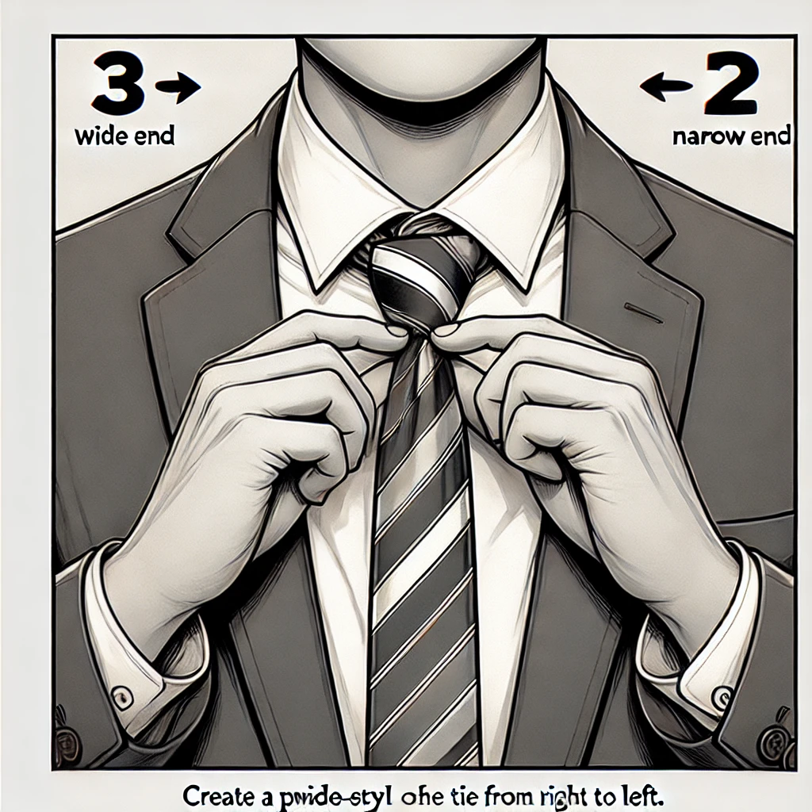

3) Procedural Knowledge (Steps)
Step 1: Drape the Tie Around Your Collar
Place the tie so the wide end is on your dominant side, with the narrow end near mid-chest. The wide end should be roughly 6–8 inches longer than the narrow end.
Step 2: Cross the Wide End Over the Narrow End
Form an “X” at about chest level, with the wide end passing in front of the narrow end.
Step 3: Loop the Wide End Behind the Narrow End
Bring the wide end behind the narrow end from right to left (your right to your left), so it re-emerges on the left side of your body.
Step 4: Bring the Wide End Across the Front Again
Wrap the wide end horizontally across the front, from left to right, forming a horizontal band.

Step 5: Pull the Wide End Up Through the Neck Loop
Bring the wide end upward behind the loop around your collar. Keep one hand on the forming knot to hold it in place.
Step 6: Feed the Wide End Down Through the Front Loop
Guide the tip of the wide end down through the opening in front (the horizontal band). Gently pull it down to form the knot.
Step 7: Adjust and Tighten
Hold the knot and pull the wide end to remove slack. Slide the knot up snugly to your collar. Check the final length near your belt line.